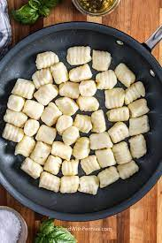

Gnocchi

A classic homemade pasta. Pronounce "nYaw-kee", despite what restaurants tell you.
Ingredients:
- 1 egg
- 1 medium potato, mashed OR 1/2 lb ricotta
- flour
Steps:
- mix ricotta or potato plus egg
- add enough flour to make non-sticky dough
- roll into ropes
- cut into small tootsie-roll shapes
- Roll with your thumb (to curl)
- cook in boiling, salted water for about 20 mins